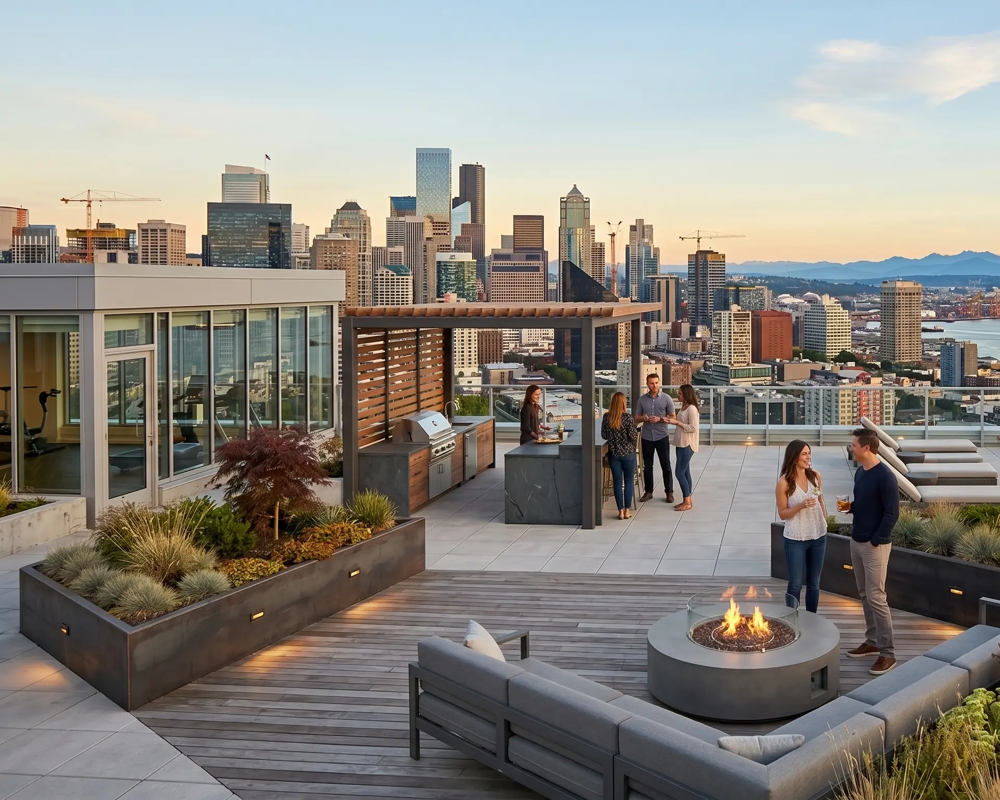
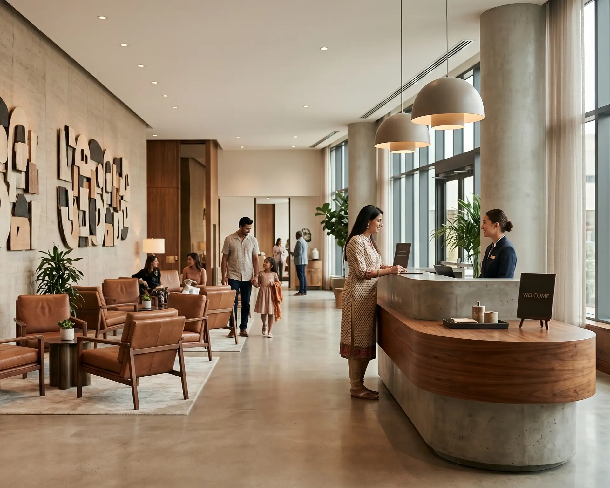
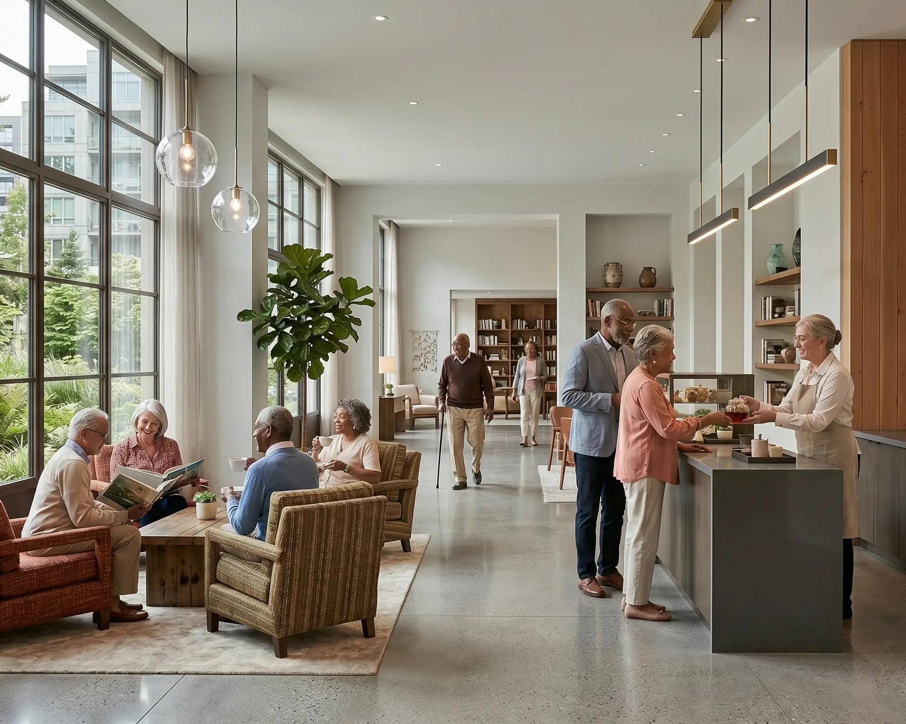

Many modular systems are designed in isolation from the projects that ultimately use them. The Rex system was designed the other way around — starting with the constraints of real mid-rise multifamily development in the Pacific Northwest and working backward to build a system that performs within them. The result is a fully integrated DfMA framework that connects structural engineering, unit planning, MEP coordination, and facade design into a single coherent system — one that is repeatable across projects, manufacturable at scale, and designed to compress schedules without compromising quality.
All images by RexModular
A Collaborative
Experience That Delivered
Exceptional Results
Built for
urban
demand
and repeatable growth.
Rex Modular is focused on dense urban environments and high-demand locations where speed, labor efficiency, and cost certainty matter most. Starting with our flagship project at 3031 Western Avenue, we are building a repeatable delivery model across multiple asset classes.
We are building a repeatable delivery model across projects - enabling consistent execution, improved predictability, and scalable deployment across urban markets.

Multifamily Housing
Multifamily housing forms the foundation of the Rex platform. The system is specifically engineered to address the unique demands of high-density residential projects in space-constrained urban environments, where schedule compression, labor shortages, and escalating costs impose the greatest challenges.
Rex excels in high-rise multifamily developments through advanced modular construction techniques. By leveraging off-site prefabrication — particularly volumetric modular methods — modules are manufactured in a controlled factory setting and assembled rapidly on-site. This approach enables concurrent site preparation and module production, yielding construction timeline reductions of 30 to 60 percent compared with traditional methods. On-site labor requirements decrease substantially (often by 40 to 60 percent), while overall project costs are lowered through reduced material waste, minimized weather-related delays, and enhanced quality control. These efficiencies are especially valuable in dense urban settings, where they limit neighborhood disruption and accelerate revenue generation for developers.
The platform supports a full spectrum of customizable unit configurations, ranging from compact studios to expansive three-bedroom penthouses. Designs are tailored to project-specific requirements, market demands, and site constraints, with flexible average unit sizing to optimize density, livability, and financial performance. This adaptability ensures that Rex delivers high-quality, scalable solutions that meet the evolving needs of urban multifamily housing while maintaining rigorous standards for constructability and long-term sustainability.

Hospitality
Hospitality development aligns naturally with modular delivery, given the high degree of unit repeatability and standardized building systems inherent to hotel guestrooms and supporting infrastructure. The Rex platform capitalizes on these characteristics to deliver faster project timelines, superior quality control, and accelerated time to market, enabling developers and operators to respond effectively to evolving urban demand.
Rex is optimized for high-rise hospitality projects in constrained urban settings across the United States. The platform is ideally suited to 3.5- to 5-star hotels targeting business travelers and extended-stay guests, with an anticipated average daily rate (ADR) exceeding $300. These properties serve major metropolitan markets and other high-density urban centers where corporate and transient demand drives premium positioning. Modular high-rise construction has already proven effective in these environments, as demonstrated by the 21-story citizenM Bowery hotel in Manhattan, which utilized prefabricated volumetric modules to achieve rapid, high-quality delivery in a dense city core. Through advanced volumetric modular techniques, Rex manufactures fully fitted guestroom modules and standardized systems in a controlled factory setting while site preparation proceeds in parallel. Once delivered, modules are stacked and integrated on-site, yielding construction timeline reductions of 30 to 50 percent compared with conventional methods. On-site labor requirements are substantially lowered, mitigating the impact of urban labor shortages and elevated wage costs. Quality control is markedly enhanced, as repetitive assembly occurs under precise, weather-independent conditions, ensuring consistent finishes, mechanical systems integration, and compliance with brand standards across all units.
The Rex team possesses deep knowledge and extensive experience in both hotel development and construction. This expertise encompasses full-cycle project oversight — from initial feasibility analysis and entitlement processes through detailed design coordination, procurement, and execution. With a thorough understanding of hospitality-specific requirements, including brand standards, operational workflows, guest experience optimization, and regulatory compliance for urban high-rise projects, the team ensures seamless integration of modular methodologies with developer objectives. This comprehensive insight enables proactive risk management, precise cost forecasting, and efficient resolution of complex site constraints, delivering predictable outcomes that align technical execution with commercial and operational success. Additional advantages of the modular approach for hospitality include minimized material waste, reduced neighborhood disruption in high-traffic urban zones, and earlier project completion that accelerates revenue generation and return on investment. These efficiencies are particularly valuable for upper-midscale to luxury segments, where predictability of cost, schedule, and guest experience directly supports competitive performance. The Rex system thus provides a scalable, high-performance solution that meets the rigorous demands of modern urban hotel development while maintaining exacting standards for constructability, operational efficiency, and long-term sustainability.

Senior Living & CCRCs
Senior living and Continuing Care Retirement Communities (CCRCs), also known as Life Plan Communities, represent a precision-built environment engineered for consistency, long-term durability, and operational efficiency. The Rex platform supports the development of senior living communities through a modular delivery model that significantly reduces construction risk while upholding the highest standards of resident comfort, safety, and quality of life.
Rex is optimized for high-density urban senior living projects, particularly high-rise buildings of 15 stories or more, located in space-constrained metropolitan areas. The platform is well-suited to a full continuum of care, encompassing independent living, assisted living, memory care (including dementia support), and skilled nursing services. These integrated facilities serve urban seniors seeking premium, accessible environments with seamless transitions between care levels, all within a single, vertically developed community. In the Pacific Northwest and similar high-density urban markets across the United States, high-rise approaches have demonstrated strong applicability. Notable examples include the 21-story Skyline Olympic Tower in Seattle's First Hill neighborhood, which delivers luxury independent living with comprehensive care amenities, and the ongoing 33-story West Tower expansion at Horizon House, also in Seattle, adding 198 modern independent living residences. Such projects illustrate how high-rise configurations effectively address land scarcity while providing residents with elevated views, walkable access to urban services, and integrated healthcare proximity — key considerations in dense cities like Seattle, Portland, and other major metropolitan centers.
Through advanced volumetric modular techniques, Rex manufactures fully fitted resident modules — including living spaces, bathrooms, kitchens, and integrated mechanical systems — in a controlled factory environment, allowing site preparation and foundation work to proceed in parallel. Modules are then transported and stacked on-site, resulting in construction timeline reductions of 30 to 50 percent relative to traditional methods. This accelerated delivery minimizes exposure to weather delays, labor shortages, and escalating costs, which are particularly acute in urban settings. On-site labor requirements are substantially reduced, limiting disruption to surrounding neighborhoods and enabling faster occupancy for revenue generation or resident move-ins.
Quality control is markedly enhanced under factory conditions, ensuring precise finishes, superior sound insulation, accessibility compliance, and consistent integration of life-safety systems essential for senior environments. Additional benefits include minimized material waste, improved energy efficiency for long-term operational savings, and greater predictability in budgeting and scheduling — critical factors for nonprofit and for-profit senior living sponsors alike. The modular approach supports the creation of dignified, resident-centered spaces that promote wellness, community engagement, and aging in place. By combining speed, precision, and scalability, Rex delivers high-performance solutions tailored to the rigorous demands of modern urban senior living and CCRCs, while maintaining exacting standards for constructability, regulatory compliance, and sustainable, durable design.
The System Details
The Rex structural system is built on a hybrid of HSS steel and cold-formed steel — a combination that delivers the strength and span capacity required for mid-rise construction while remaining compatible with volumetric modular production. The system is engineered to meet Type 1B construction requirements, including 2-hour fire-resistance ratings across all required assemblies.
Modules are fabricated through final finishes in a controlled factory environment, then transported and assembled on-site with minimal wet trades and reduced on-site labor. MEP systems are coordinated and pre-installed at the module level, with inter-module connections designed for speed and repeatability.
The factory model is built around a local assembly facility — sourcing components and integrating them near the project site — keeping logistics manageable and quality control close.